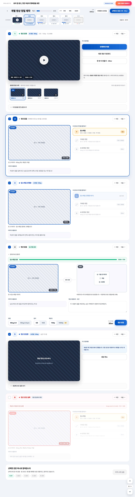
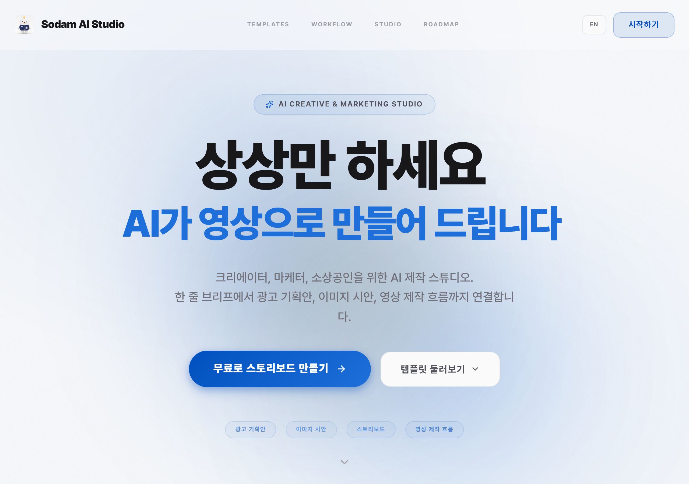

docs/mockups/mode-b-implementation-prompt.md
지시서 8개 항목이 components/production/ProductionModeB.tsx
에 어떻게 반영되었는지 매핑
docs/mockups/mode-b-with-upscale.html — 사용자가 카드뷰 · START/END 중심으로 편집한 최신 버전.
이 문서가 Mode B 배선의 유일한 시각 정답입니다.

씬 하나당 큰 카드 하나. idle(액션 선택) · editor(편집기 전개) · done(결과 재생) 3상태.
| 항목 | 구현 위치 | 상태 |
|---|---|---|
| CardMode 타입 | ProductionModeB.tsx:51 type CardMode = 'idle' | 'editor' | ✓ |
| done 자동 판정 | SceneCard 내부 const done = !!scene.video_url | ✓ |
| 액션 선택 컴포넌트 | SceneActionPicker — START + 3버튼 (업스케일/가벼운 편집/AI 생성) | ✓ |
| 편집기 컴포넌트 | SceneEditor — START·END·프롬프트·모델·길이·해상도·비용 | ✓ |
| 결과 재생 (done) | 큰 video 재생기 + 다운로드/다시 만들기 + <details> 세팅 보기 | ✓ |
| 편집기 열기 | onSetMode('editor') — AI 생성 버튼 클릭 시 | ✓ |
| ‹ 방식 다시 고르기 | SceneEditor 좌상단 · onBack 콜백 | ✓ |
imageUpscaleService.upscaleSceneImage()의 최초 사용처.
| 항목 | 구현 위치 | 상태 |
|---|---|---|
| 업스케일 상태 | ProductionModeB.tsx:83 upscaleJobs: Record<sceneId, UpscaleStatus> | ✓ |
| 실행 함수 | :155 runUpscale — detectAspectFromImage → upscaleSceneImage | ✓ |
| 완료 판정 | :112 isUpscaled = !!scene.upscale_level (지시서: 새 필드 X) | ✓ |
| 크레딧 차감 | IMAGE_UPSCALE_COST=3 · hasEnough 사전 검사 | ✓ |
| 추정 진행률 | 400ms interval, +4%/tick · 완료 100% (실제 API progress 없음) | ✓ |
| 결과 반영 | updateScene(id, { image_url: result.dataUrl, upscale_level: '2K' }) | ✓ |
다음 씬 이미지 · 파일 · 보관함 → 세 방법 중 하나로 END 채움.
| 항목 | 구현 위치 | 상태 |
|---|---|---|
| 다음 씬 이미지 자동 | SceneEditor — onPatch({ endImage: nextSceneImage }) | ✓ |
| 파일 업로드 | <input type="file"> → FileReader → dataURL | ✓ |
| 보관함 픽커 | :336 pickerFor state + AssetLibraryPicker | ✓ |
| END 설정 시 Pro 승격 | 비용 계산 hasEndFrame: !!settings.endImage → 30 → 60cr | ✓ |
| 모델 라벨 pro 표기 | settings.resolution === '1080p' || settings.endImage ? MODEL_LABEL_PRO : STD | ✓ |
체크박스로 최종 영상에 포함할 씬 지정. 해제된 씬은 dim.
| 항목 | 구현 위치 | 상태 |
|---|---|---|
| 선택 상태 | :82 selected: Record<sceneId, boolean> · 기본 전체 true | ✓ |
| 토글 | :316 toggleSelect — 카드 헤더 체크박스 | ✓ |
| 비활성 시각 | opacity-40 pointer-events-none + "최종 영상에서 제외" 뱃지 | ✓ |
| 진행률·합계·비용 | 모두 selectedScenes 기준으로 계산 | ✓ |
| 빠른 선택 3버튼 | 전체 selectAll / 해제 clearAll / 완성만 selectCompleted | ✓ |
108px 폭 칩 가로 스크롤 · 완료 씬은 mouseenter/leave 로 재생/정지.
| 항목 | 구현 위치 | 상태 |
|---|---|---|
| 레일 컴포넌트 | SceneRailChip · 폭 108px · flex-none | ✓ |
| 가로 스크롤 | 부모 overflow-x-auto pb-1 | ✓ |
| 상태 표시 | 번호(상단) · 썸네일(중앙) · 색점+텍스트(하단) | ✓ |
| 완료 씬 hover 재생 | onMouseEnter → play() · onMouseLeave → pause() + currentTime=0 | ✓ |
| 스티키 | sticky top-16 z-30 + backdrop-blur | ✓ |
레일 클릭 · 카드 헤더 up/down · 우하단 플로팅 · 키보드 ↑↓/J/K.
| 항목 | 구현 위치 | 상태 |
|---|---|---|
| 1) 레일 클릭 | SceneRailChip onClick={() => scrollToScene(s.id)} | ✓ |
| 2) 카드 헤더 | SceneCard 헤더 ChevronUp/Down 버튼 · onPrev/onNext | ✓ |
| 3) 우하단 플로팅 | FloatingSceneNav · 위/카운터/아래 버튼 | ✓ |
| 4) 키보드 | :307 useEffect — J/K/ArrowUp/ArrowDown · INPUT/TEXTAREA 포커스 시 무시 | ✓ |
| 착지 지점 | scrollIntoView({ behavior:'smooth', block:'start' }) + scrollMarginTop: 200 | ✓ |
| 액티브 씬 추적 | setActiveSceneId(sceneId) — 레일 highlight 동기화 | ✓ |
confirm() 텍스트 방식을 신규 GenerateAllModal로 대체.
| 항목 | 구현 위치 | 상태 |
|---|---|---|
| 1단계 모델 선택 | Kling 2.6 std (30cr) / pro (60cr) / 코드 모션 (disabled) | ✓ |
| 2단계 씬 확인 리스트 | 이미 완료 → unchecked, 업스케일 필요 → +3cr 표기 | ✓ |
| 합계·잔액·경고 | 하단 sticky 바 · canProceed = balance >= totalCost | ✓ |
| ESC · 배경 클릭 닫기 | useEffect onEsc + onClick target check | ✓ |
| "다시 만들면 교체됩니다" 문구 | 모달 하단 warn 배너로 명시 (Phase 1 한계) | ✓ |
사용자 defaultLanguage에 따라 한 화면 한 언어. 영문/한글 병기 금지.
| 항목 | 구현 위치 | 상태 |
|---|---|---|
| 표시용 프롬프트 분기 | :116 getDisplayPrompts — ko → content_kr/video_motion_kr, en → image_prompt_en/video_motion_en | ✓ |
| Kling 전송용 프롬프트 | :125 buildKlingPrompt — 편집 있으면 편집값, 없으면 항상 video_motion_en | ✓ |
| 주석 · 향후 계획 | Korean-only 전환 리팩터는 별도 · 메모리 저장됨 feedback_korean_only_prompt_plan.md | ✓ |
| 편집기 라벨 | 영상 프롬프트 (한국어) 또는 (English) | ✓ |
빠른 선택 옆 텍스트 링크로 배치. 기획 전용 함수(PlanningStep.tsx:165 moveScene / :175 removeScene / :184 addScene) 미노출.generateStudioVideo·videoStudioCreditCost·upscaleSceneImage·AssetLibraryPicker 모두 기존 인터페이스 그대로 사용.MODEL_LABEL_BASE를 VIDEO_STUDIO_MODEL에서 파생 (ProductionModeB.tsx:45). 상수 값이 바뀌면 UI 라벨도 자동 반영.씬을 다시 만들면 기존 video_url 이 덮어써짐. 다음 리팩터에서 씬당 여러 테이크를 스택으로 유지하고 대표 선정 기능 도입.
types.ts — video_url?: string → video_takes?: VideoTake[] + main_take_id?: stringtypes/database.ts + Supabase 마이그레이션 신규store.ts — 테이크 추가/대표 지정 액션video_url 참조를 전부 "대표 테이크" 로 교체video_url 있으면 테이크 1개로 변환, 그게 대표npm run build 통과 — tsc --noEmit + vite build 완료 (12.5초 · ModeB 35.77kB)selectedScenes 파생값 useMemo 없이 매 렌더 계산 (씬 소수라 문제 없음)hasEndFrame 인자 → videoStudioCreditCost 재계산 · 라벨 pro 전환a2b8934 feat(mode-b): 목업 지시서 반영 재작성 (Phase 1) + admin 표 정렬 2d19d0f fix(video-studio): 프로젝트 통합영상은 사이드바 히스토리에서 제외 667507b fix(mode-a): 시퀀스 프롬프트 강화 - 씬 순서·전 씬 애니메이션 명시 0e8376d feat(mode-a): 큐 유지 · 결과 목록 · 보관함 저장 통합 0f5003d fix(pricing): 영상 크레딧을 "30 × 유닛수" 로 통일 35e88fd feat(mode-a): 스토리보드 통합 영상에도 해상도 UI 추가 69e892c feat(video-studio): 1080p 해상도 옵션 추가 · Pro 모드 자동 매핑 00167ca fix(kling): 끝 프레임 사용 시 mode=std → pro 자동 승격 5424296 feat: 동영상 명시 저장 · VideoStudio 포커스 뷰 · 히스토리 페이지네이션 0b90e27 feat: 대시보드 의뢰현황 표 · 히스토리 클릭 재생 · 동영상 필터 · 9씬 3x3 508e4f9 feat: 프롬프트 초과 원클릭 압축 · Mode B HTML 목업 · 업스케일 서비스 236b482 feat(kling): 기본 모델을 kling-v1 → kling-v2-6 로 업그레이드 404b6ff fix(mode-a): 시퀀스 프롬프트 재설계 - 항상 2400자 이내 강제 9e9940d fix+feat: 스토리보드 합성 비율 오류 · 프로젝트 제목 인라인 편집 705349e feat(production): 의뢰하기 모달 + DB + 이메일 (Phase 7) 4904891 feat(production): 모드 A - 스토리보드 다듬기의 씬 이미지 재합성 4aa9a98 feat(production): 모드 B 세로 타임라인 (Phase 5) bf883b8 chore(nav): 기획 → 초안기획하기 · 프로젝트 제목 truncation 완화 6842ca3 refactor(video-studio): Kling 스타일 큐 · 이탈해도 지속 · 레이아웃 정합 fd0ef13 feat: 종횡비 · 크레딧 · Kling 프롬프트 상한 · 관리자 사용량 · 그 외 UX 개선
실 Supabase 인증 환경이라 Playwright 로 로그인 후 Mode B 진입은 이번 리뷰에서 생략. 로그인 후 화면은 직접 확인.

a2b8934 반영 · 1~2분)